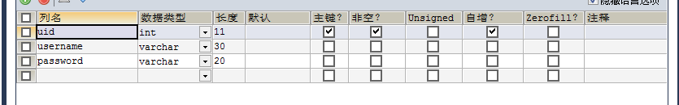
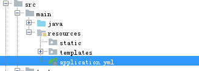
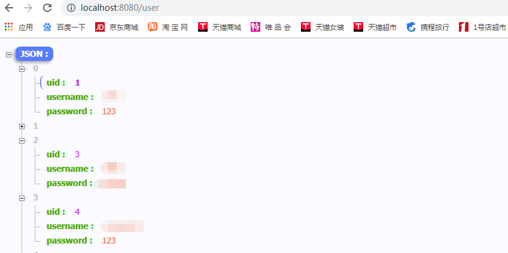
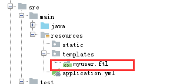
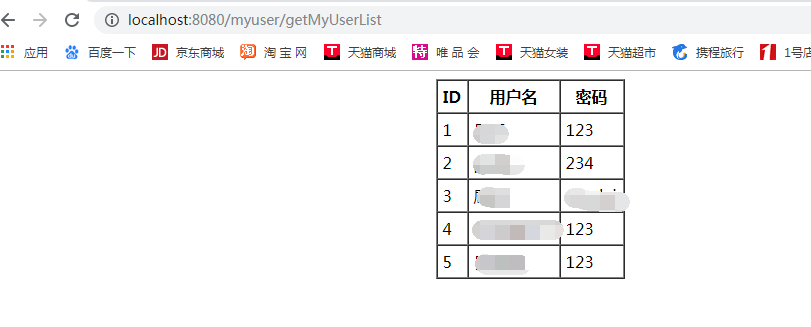

查询数据库---->得到数据------>展示到页面上
具体步骤查看我上一篇随笔
https://www.cnblogs.com/pengpengdeyuan/p/11798804.html
<dependencies>
<dependency>
<groupId>org.springframework.boot</groupId>
<artifactId>spring-boot-starter-web</artifactId>
</dependency>
<dependency>
<groupId>org.springframework.boot</groupId>
<artifactId>spring-boot-starter-test</artifactId>
<scope>test</scope>
<exclusions>
<exclusion>
<groupId>org.junit.vintage</groupId>
<artifactId>junit-vintage-engine</artifactId>
</exclusion>
</exclusions>
</dependency>
<!--添加springdatajpa的依赖-->
<dependency>
<groupId>org.springframework.boot</groupId>
<artifactId>spring-boot-starter-data-jpa</artifactId>
</dependency>
<!--mysql-->
<dependency>
<groupId>mysql</groupId>
<artifactId>mysql-connector-java</artifactId>
</dependency>
<!--freemarker模板 依赖-->
<dependency>
<groupId>org.springframework.boot</groupId>
<artifactId>spring-boot-starter-freemarker</artifactId>
</dependency>
<!--Lombok依赖-->
<dependency>
<groupId>org.projectlombok</groupId>
<artifactId>lombok</artifactId>
<version>1.18.6</version>
</dependency>
<!--mybatis-->
<dependency>
<groupId>org.mybatis.spring.boot</groupId>
<artifactId>mybatis-spring-boot-starter</artifactId>
<version>1.1.1</version>
</dependency>
</dependencies>
CREATE TABLE user(
uid INT PRIMARY KEY AUTO_INCREMENT,
username VARCHAR(30),
`password` VARCHAR(10)
);
在resources文件夹下创建application配置文件

提供两种配置文件，可任选其一
application.properties：
spring.datasource.driver-class-name=com.mysql.jdbc.Driver
spring.datasource.url=jdbc:mysql://127.0.0.1:3306/user
spring.datasource.username=（自己MySQL的用户名，一般为root）
spring.datasource.password=（自己MySQL的密码）
spring.jpa.database=MySQL
spring.jpa.show-sql=true
spring.jpa.generate-ddl=trueapplication.yml
spring:
datasource:
driverClassName: com.mysql.jdbc.Driver
url: jdbc:mysql://127.0.0.1:3306/user?useUnicode=true&characterEncoding=utf-8&useSSL=false&serverTimezone = GMT
username: （自己MySQL的用户名，一般为root）
password: （自己MySQL的密码）
jpa:
database: MySQL
show-sql: true
generate-ddl: true
@Entity//指定实体类，必须指定@id
@Table(name = "user")//指定表名
@Data//编译后自动生成所有属性的get\set方法、toString方法、hashCode方法、equals方法
@AllArgsConstructor//编译后自动生成全参构造
@NoArgsConstructor//编译后自动生成无参构造
public class User {
@Id//主键
@GeneratedValue(strategy = GenerationType.IDENTITY)//自增
private int uid;
private String username;
private String password;
}@RestController//相当于@ResponseBody跟@Controller
public class UserController {
@Autowired
private UserDao userDao;
@RequestMapping(value = "/user")
public List<User> getUser(){
return userDao.findAll();
}
}public interface UserDao extends JpaRepository<User,Integer> { }
在上一节的基础上，配置Mybatis
<?xml version="1.0" encoding="UTF-8"?>
<project xmlns="http://maven.apache.org/POM/4.0.0" xmlns:xsi="http://www.w3.org/2001/XMLSchema-instance"
xsi:schemaLocation="http://maven.apache.org/POM/4.0.0 https://maven.apache.org/xsd/maven-4.0.0.xsd">
<modelVersion>4.0.0</modelVersion>
<parent>
<groupId>org.springframework.boot</groupId>
<artifactId>spring-boot-starter-parent</artifactId>
<version>2.0.7.RELEASE</version>
<relativePath/> <!-- lookup parent from repository -->
</parent>
<groupId>com.pk</groupId>
<artifactId>springbootday02</artifactId>
<version>0.0.1-SNAPSHOT</version>
<name>springbootday02</name>
<description>Demo project for Spring Boot</description>
<properties>
<java.version>1.8</java.version>
</properties>
<dependencies>
<dependency>
<groupId>org.springframework.boot</groupId>
<artifactId>spring-boot-starter-web</artifactId>
</dependency>
<dependency>
<groupId>org.springframework.boot</groupId>
<artifactId>spring-boot-starter-test</artifactId>
<scope>test</scope>
<exclusions>
<exclusion>
<groupId>org.junit.vintage</groupId>
<artifactId>junit-vintage-engine</artifactId>
</exclusion>
</exclusions>
</dependency>
<!--添加springdatajpa的依赖-->
<dependency>
<groupId>org.springframework.boot</groupId>
<artifactId>spring-boot-starter-data-jpa</artifactId>
</dependency>
<!--mysql-->
<dependency>
<groupId>mysql</groupId>
<artifactId>mysql-connector-java</artifactId>
</dependency>
<!--freemarker模板 依赖-->
<dependency>
<groupId>org.springframework.boot</groupId>
<artifactId>spring-boot-starter-freemarker</artifactId>
</dependency>
<!--Lombok依赖-->
<dependency>
<groupId>org.projectlombok</groupId>
<artifactId>lombok</artifactId>
<version>1.18.6</version>
</dependency>
<!--mybatis-->
<dependency>
<groupId>org.mybatis.spring.boot</groupId>
<artifactId>mybatis-spring-boot-starter</artifactId>
<version>1.1.1</version>
</dependency>
</dependencies>
<build>
<!--设置Mapper映射可在java或者resources文件夹下-->
<resources>
<resource>
<directory>src/main/java</directory>
<includes>
<include>**/*.properties</include>
<include>**/*.xml</include>
</includes>
<filtering>false</filtering>
</resource>
<resource>
<directory>src/main/resources</directory>
<includes>
<include>**/*.*</include>
</includes>
<filtering>false</filtering>
</resource>
</resources>
<plugins>
<plugin>
<groupId>org.springframework.boot</groupId>
<artifactId>spring-boot-maven-plugin</artifactId>
</plugin>
</plugins>
</build>
</project>也可以直接用上一节的实体类，注意lombok注解与自己创建的构造器、set、get等方法不能重复
public class MyUser {
private int uid;
private String username;
private String password;
public MyUser(int uid, String username, String password) {
this.uid = uid;
this.username = username;
this.password = password;
}
public MyUser() {
}
public int getUid() {
return uid;
}
public void setUid(int uid) {
this.uid = uid;
}
public String getUsername() {
return username;
}
public void setUsername(String username) {
this.username = username;
}
public String getPassword() {
return password;
}
public void setPassword(String password) {
this.password = password;
}
@Override
public String toString() {
return "MyUser{" +
"uid=" + uid +
", username='" + username + '\'' +
", password='" + password + '\'' +
'}';
}
}
@Controller
@RequestMapping("/myuser")
public class MyUserController {
@Autowired
private MyUserMapper myUserMapper;
@RequestMapping(value = "/getMyUserList",method = RequestMethod.GET)
public String getMyUserList(Model model){
List<MyUser> userList = myUserMapper.getMyUserList();
model.addAttribute("userList",userList);
return "myuser";
}
}public interface MyUserMapper {
List<MyUser> getMyUserList();
}<?xml version="1.0" encoding="UTF-8" ?>
<!DOCTYPE mapper
PUBLIC "-//mybatis.org//DTD Mapper 3.0//EN"
"http://mybatis.org/dtd/mybatis-3-mapper.dtd">
<mapper namespace="MyUserMapper接口的全路径名">
<select id="getMyUserList" resultType="MyUser实体类的全路径名">
select * from user
</select>
</mapper>在resources文件夹下的templates文件夹下创建myuser.ftl文件（Freemarker模板）

<html>
<head>
<title>User</title>
</head>
<body>
<table align="center" border="1px" cellpadding="5px" cellspacing="0px">
<tr>
<th>ID</th>
<th>用户名</th>
<th>密码</th>
</tr>
<#list userList as user>
<tr>
<td>${user.uid}</td>
<td>${user.username}</td>
<td>${user.password}</td>
</tr>
</#list>
</table>
</body>
</html>